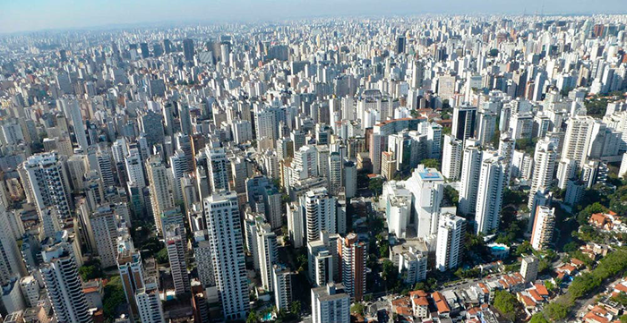

A fundação da cidade de São Paulo aconteceu no local conhecido como Pátio do Colégio, no dia 25 de
janeiro de 1554. A edificação foi construída pela missão jesuítica liderada pelos padres José de
Anchieta e Manuel da Nóbrega, com a intenção de catequizar as populações indígenas que viviam na região.
A cidade foi, aos poucos, ganhando centralidade econômica e política na região e capital da província
em 1815. A intensificação dos fluxos de migrantes e do desenvolvimento econômico de São Paulo
aconteceu, principalmente, durante o ciclo do café. O avanço da industrialização, juntamente do
fenômeno da urbanização, foi consolidando o papel da cidade na economia regional e nacional,
chegando, atualmente, à classificação de cidade global.
Geografia da cidade de São Paulo
A cidade de São Paulo abriga a sede do governo do estado, localizado na região Sudeste. São Paulo
possui atualmente área de 1.521,110 km², sendo a 9ª em extensão do estado. O município é
considerado sede da Região Metropolitana de São Paulo, composta, no total, por 39 cidades e mais de 20
milhões de habitantes.
De acordo com a classificação do IBGE, a capital paulista é considerada uma grande metrópole
nacional. Em função dos serviços que concentra em setores variados e do dinamismo econômico, São
Paulo é também classificada como cidade global.
O clima predominante é o Subtropical Úmido, caracterizado pelas temperaturas amenas, com média de
22 ºC, e chuvas bem distribuídas ao longo do ano. O município, entretanto, apresenta algumas
particularidades com relação ao tempo.
A amplitude térmica diária é bastante elevada, podendo apresentar temperaturas muito baixas, nos
períodos da manhã e noite, e atingir rapidamente valores máximos durante o dia. O fenômeno conhecido
como ilha de calor, característico dos grandes centros urbanos, ajuda-nos na compreensão dessas
variações.
O município está inserido no bioma Mata Atlântica. Um estudo recente|1| sobre a cobertura vegetal
de São Paulo mostra que 48,18% da sua área possuem algum tipo de vegetação, e que 43,66% da cobertura
correspondem à vegetação natural. As principais formações são floresta, campos naturais, brejo e
vegetação de várzea.
São Paulo encontra-se numa área em que há a predominância de planaltos. As formações encontradas
no município são morros, serras e planícies. O ponto mais elevado da cidade é o Pico do Jaraguá, na
Serra da Cantareira, com 1.135 metros.

Vista da cidade de São Paulo do seu ponto mais alto, o Pico do Jaraguá.
Os principais rios que cortam a cidade são:
Tietê
Pinheiros
Embu-Guaçu
Aricanduva
Tamanduateí
Duas importantes represas encontram-se parcialmente no território paulistano: Cantareira e Bilings.
Economia da cidade de São Paulo
O PIB da cidade de São Paulo para 2018 foi de R$ 714.683.362,46 (IBGE), o que correspondia a 10,2% do PIB
brasileiro. A maior parcela desse valor (74,08%) é formada pelas atividades do setor terciário,
seguido da indústria (8,12%) e, por fim, com menor participação (0,005%), da agropecuária. No contexto
mundial, São Paulo é a 21ª economia, e a 3ª maior da América Latina.
O município destaca-se no setor financeiro, abrigando as sedes de alguns dos principais bancos
nacionais e internacionais bem como de grandes indústrias, que vão desde o setor de tecnologia, de
comunicação, até montadoras de veículos e empresas do agronegócio mundial. No geral, 63% das empresas
internacionais com filial no Brasil concentram-se em São Paulo. Em função disso, o município é considerado
um importante centro financeiro do país.
Por conta da sua estrutura econômica e da densa rede de transportes e de serviços que garantem a conexão com
diversas partes do mundo, São Paulo é um grande atrativo para investimentos internacionais, ficando
atrás apenas de centros como Nova York, Hong Kong, Londres e Xangai.
O comércio e o setor varejista desempenham um importante papel na economia do município, liderando as
atividades do setor terciário. Além disso, a capital paulista é um dos principais destinos turísticos no
país, e foi considerada o segundo mais desejado do mundo em 2020. O turismo constitui, então, uma
grande fonte de receitas para o município.